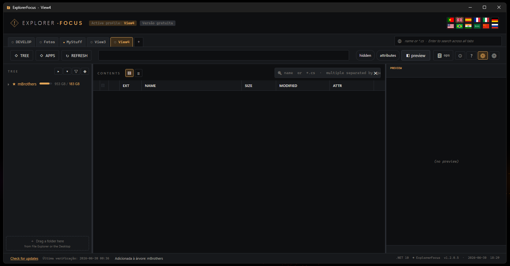

Connecting Dropbox
ExplorerFocus lets you connect your own Dropbox and work with your files exactly like local folders — browse, preview, upload, download, rename, move and delete — all from one focused window.
ExplorerFocus at a glance
The main window keeps everything one glance away: tabbed profiles at the top, your folder tree on the left, the file list in the centre and a live preview on the right.

- Multiple profiles/tabs — a different workspace for each context.
- Drag a folder straight from Windows Explorer or the Desktop into the tree to add it.
Open the tree manager
Click TREE to open Folders + Registry, where you manage what appears in your side tree. To add a cloud or a server, click + Remote Folder.

- Mix local folders, Windows Registry keys and remote connections in one tree.
- Reorder, rename and annotate each root.
Pick Dropbox
The Remote access window lists every connection type — SFTP, FTP, FTPS, WebDAV and clouds (Dropbox, OneDrive), with S3 and rclone on the way. Click Dropbox.

- One window for every protocol; manage, reconnect or remove connections here.
- Cloud connections require PREMIUM; your activation Machine ID is shown at the bottom.
Local-first, by design
Before any remote is added, ExplorerFocus tells you exactly how it works, then asks you to confirm. Click OK.

- Everything stays on your computer — no app server is involved.
- Credentials are encrypted with Windows DPAPI; you sign in on the provider's own site.
- The app connects directly to your cloud/server and only does what you ask — deletes are real.
Dropbox sign-in opens
Your default browser opens Dropbox's official OAuth page. Because the app is new and still has a small number of users, Dropbox shows a heads-up — click Continue.

- Authentication happens entirely on dropbox.com — the app never sees your password.
Grant access
Review what the app requests — edit and view your Dropbox files, plus basic account info — then click Allow.

- Access is limited to your own account only.
- You can revoke it anytime from Dropbox → Connected apps.
Connected
Your Dropbox now appears in the tree and expands like any folder — Camera Uploads, Photos,
and the rest. The address bar shows the live dropbox:// path.

- Browse the cloud exactly like a local drive — expand, navigate, search.
- Folders and files load on demand as you open them.
Saved & managed
The connection is saved in Remote access. Reconnect, edit, reorder or remove it whenever you like.

- Reconnects automatically on next launch (refresh token kept encrypted with DPAPI).
- Run several connections side by side under PREMIUM.
Instant preview
Select any file for a built-in preview — no need to download it first.

- Images, Markdown and PDF render inline.
- Text and code are syntax-highlighted, with brace/tag folding to collapse blocks.
Full file operations
Right-click for the works — your cloud files behave just like local ones.

- Open, edit, open-with, rename, copy/cut, move, delete.
- Download to your PC or upload files and whole folders to the cloud.
- Edit-in-place: open a cloud file, edit it, and changes sync back on save.
The flow is the same for OneDrive — pick OneDrive in step 3 and sign in with your Microsoft account.